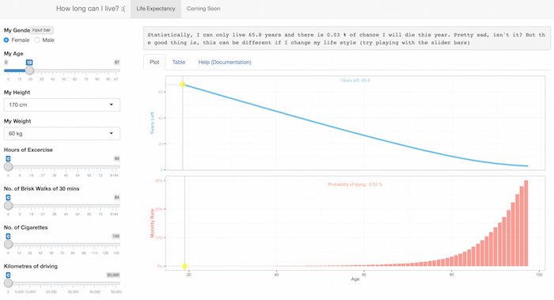

The (How long can I live) app is served as an interactive tool which helps you to
1. understand how many years left (Life Expectancy) for you at your age
2. how likely you would die (Moratility Rate) within this year
Also and more importantly, you can use several sliders (exercise, walk, cigarette consumption, and driving mileage) to see how the change in the life style can make a difference.
